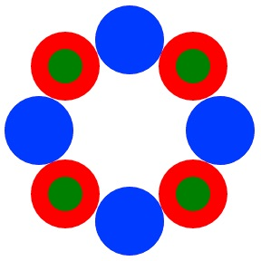

仮想関数とポリモーフィズム
前節の色付き円 ColorCircle と輪郭線円 LineCircle を同じ配列データとして扱いたい場合は、 共通の基本クラス（スーパークラス） Circle の配列として格納できる。
#define NUM_CIRCLE 10
...
Circle *circleGroup [] = new Circle [NUM_CIRCLE];
for (i = 0; i < NUM_CIRCLE; i++) {
if (i % 2 == 0) // 偶数の場合は、色付き円
circleGroup[i] = new ColorCircle ();
else // 奇数の場合は、輪郭線円を描画
circleGroup[i] = new LineCircle ();
以下、省略…
オーバライドの問題点：
生成されたオブジェクトのアドレスは、そのクラスのポインタ変数だけでなく、
その基本クラスに対するポインタ変数にも代入できる。
しかし、以下の命令文を考える。
for (i = 0; i < ARRAY_SIZE; i++) {
circleGroup[i]->draw (&svgObj);
以下、省略…
このとき、配列 circleGroup[] の要素は Circle クラスのポインタとして宣言されているので、
Circle クラスのメンバ関数 draw が呼ばれてしまう。
仮に、キャスト演算子を用いて、
((ColorCircle *) circleGroup[i])->draw (&svgObj);
と呼び出せば、オーバーライドされた ColorCircleクラスの draw 関数が呼び出される。
しかし、配列 circleGroup[] の各要素に対して、それが ColorCircle なのか、LineCircle なのかを知る手だてがない！
例えば、クラス変数に std::string type という識別用のメンバ変数を追加して、
if (circleGroup[i]->type == "ColorCircle") // type の値が ColorCircle か？
((ColorCircle *) circleGroup[i])->draw (&svgObj);
else
((LineCircle *) circleGroup[i])->draw (&svgObj);
とすれば、所望の機能（各サブクラスのオーバーライドされた draw 関数が呼び出される。
しかし、上記の解決法の問題点は：
- クラスの識別用の変数 type を用意する必要がある。
- クラスの数だけ、条件分岐 (if … else if … else ) を記述する必要がある。
この問題点を解決するためには、Circle のクラスの配列 circleGroup に実際に格納されている派生クラスの種類に応じて、 オーバーライドした関数を呼び出す機構が必要となる！
仮想関数の導入
ここで、仮想関数というメンバ関数の宣言方法を導入する。これは、基本クラスにおいては実体の無い雛形を定義しておき、派生クラスにおいて具体的な処理を記述する。関数の前には、virtual というキーワードを付ける。
Circle.h
class Circle {
省略…
virtual void draw (svg*) = 0; // 0を代入すると、純粋仮想関数となる！
};
ColorCircle.h（LineCircle も同様…）
class ColorCircle : public Circle {
省略…
virtual void draw (svg*); // 仮想関数をオーバーライド
};
確認問題
以下のプログラムで、ColorCircle と LineCircle が交互に生成されて、各々の draw 関数が呼び出されている事を確認せよ。
#include "Circle.h"
#include "ColorCircle.h"
#include "LineCircle.h"
int main() {
Circle *circ; // 基本クラスの変数として宣言
svg svgObj;
svgObj.open("test.html", 640, 400);
for (int i = 0; i < 10; i++) {
if ((i % 2) == 0) { // i が偶数の場合
circ = new ColorCircle (20*(i+1), 20, 10, "green");
}
else {// i が奇数の場合
circ = new LineCircle (20*(i+1), 20, 10, "red", 3);
}
circ->draw (&svgObj); // ColorCircle と LineCircle が交互に呼び出される！
}
svgObj.close();
}
上記のプログラムは、基本クラスの変数 circ のメンバ関数 draw に対して複数の異なる意味を与える事により、ポリモーフィズム（Polymorphism：多態性、多相性、多様性）を実現している。
具体的には、仮想関数を使う事により、同じ基本クラスを有する派生クラスを同じ型の変数として扱い、 その機能（例えば、メンバ関数 draw）の中身を、キャスト演算子で指定しなくても自動的に切り替える事ができる。
ポイント（仮想関数）：
- ヘッダファイルでの宣言中に virtual というキーワードを用いると、仮想関数となる
- 基本クラスと派生クラスの両方で virtual と指定する必要がある
- ソースファイル（.cpp）では、virtual のキーワードは不要である
- 仮想関数に０を代入したものは純粋仮想関数と呼ばれ、本体を実装が不要となる
- 純粋仮想関数を含むクラスは、抽象クラスと呼ばれる
- 抽象クラスは、実体（インスタンス）を生成できない
- 純粋仮想関数は作らなくても良い
- 仮想関数は変数が基本クラスで宣言されていても、派生クラスでの実装が優先的に呼び出される
- 基本クラスで宣言された変数に、派生クラスのインスタンスを代入できる
- 派生クラスで宣言された変数には、基本クラスのインスタンスは代入できない！
- 仮想関数は、異なる派生クラスを共通の基本クラスとして一括処理する場合にその威力を発揮する
Exercise (No.4)
Extends the program of the last week(No.3) as follows:
- Implement DoubleCircle class that draws additional circle whose radius is decreased by "ratio" percentage and has different color, by inheriting the ColorCircle class.
- Draw ColorCircles and DoubleCircles alternately arranged along a ring while contacting each other as shown in the figure below.
- In launching the program, give the number of arranged circles, the colors of ColorCircle and DoubleCircle, and the percentage of down scale for an inner circle of Double Circle
(0 < ratio < 100) as
% ./a.out 8 blue red green 50 - Use a virtual function for drawing
LineCircles that enclose inner and outer contours are NOT required. We can assume that the number of arranged circles is even number.
Result of the above execution
提出課題 (その4)
先週の課題（その３）で作成したプログラムを以下の様に拡張する。
- 色が異なり半径が ratio パーセントだけ小さい円を内部に塗りつぶす円のクラス DoubleCircle を ColorCircle クラスを継承して作成する。
- 円環状に ColorCircle と DoubleCircle を互いに内接しながら交互に配置して描画する（確認問題を参考にする）。
- プログラムの実行時に内接円の個数と ColorCircle と DoubleCircle の描画色（２種類）、および Double Circle の内部円の縮小パーセント率 (0 < ratio < 100) を指定する。
% ./a.out 8 blue red green 50 - 描画には仮想関数を用いる。
内部と外部の輪郭を囲む LineCircle は、描画しなくて良い。また、配置する円の数は偶数として良い。
上記の実行例